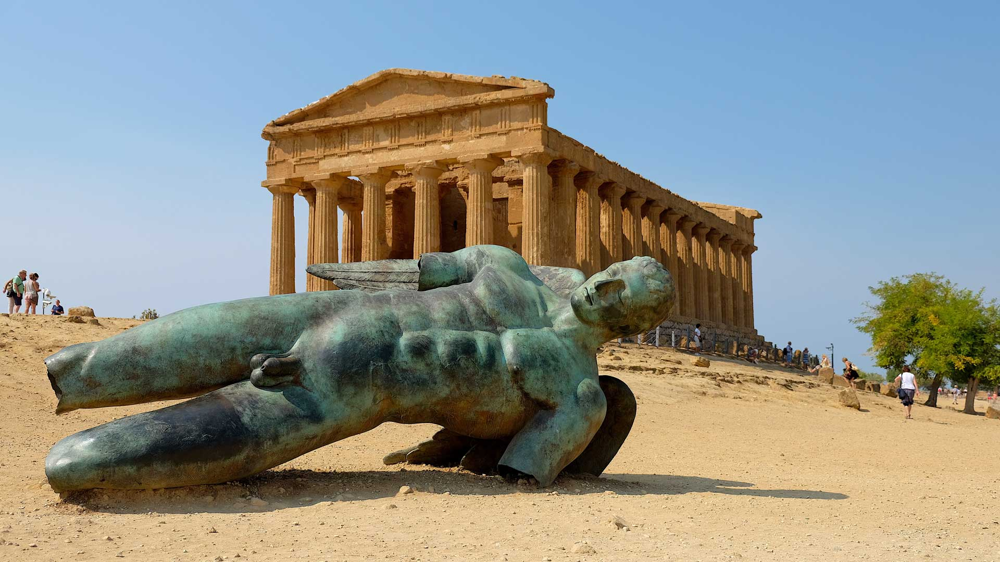

Roma
De todas las ciudades históricas de Italia, Roma es la que ejerce la mayor fascinación, ya que ofrece todo tipo de ofertas para los turistas bien sea de carácter cultural, turismo y ocio.Pero lo más recomendable, sin duda, es perderse por Roma. Dejar que las calles, los monumentos, los museos, el arte, la historia… nos invadan y dejarnos seducir por el paso de los siglos y el encanto de la capital de Italia.


Napoli
En Nápoles, la ciudad referencia de la región de Campania se mezclan el paisaje con la historia y la cultura. Por un lado, las vistas al Vesubio la convierten en una ciudad romántica. La cercanía del volcán y de Pompeya es un atractivo más de esta ciudad del sur de Italia.Nápoles tiene una gran riqueza artística. En ella encontramos una curiosa mezcla entre un pasado muy ligado a la Historia de España, y una vida cotidiana muy activa, donde la calle es el mejor de los escenarios. Declarada Patrimonio de la Humanidad por sus monumentos, en Nápoles se funden mar, arte e historia, entre pizzas y tarantellas napolitanas.


Tropea
El centro histórico de Tropea es bastante pequeño y se puede recorrer a pie en medio día. Lo mejor es caminar con calma por sus callejuelas. En la zona más antigua las casas están tan cerca que apenas se puede pasar caminando. Hay muchos restaurantes con mesas en patios y plazas, con una bella atmosfera durante el verano. Durante el invierno el pueblo de Tropea es más sobrio, pero siempre con vida. Hay dos puntos panorámicos importantes: el primero que llaman L’Affacio, al final de corso Vittorio Emmanuele (la calle principal del centro histórico).
Sicilia
Los trazos multiculturales de Palermo, la religiosidad extrema de la festividad de Santa Agata en Catania, la grandiosidad del Valle de los Templos de Agrigento, la fogosidad del Volcán Etna, el teatro de los sueños de Taormina, las tradiciones centenarias conservadas en pueblos del interior de Sicilia, la mezcla agreste y paradisiaca de las Islas Eolias, los colores de los mercados sicilianos, herencia de los árabes, o el suntuoso barroco de Siracusa y el Valle de Noto. Todo esto es Sicilia, una de las regiones más interesantes de Italia. Sicilia cuenta con la mayor densidad de patrimonio Unesco del mundo, pero los atractivos principales del turismo son su gastronomía, sus gentes, su naturaleza y su mestizaje de culturas que ha asimilado la isla.
